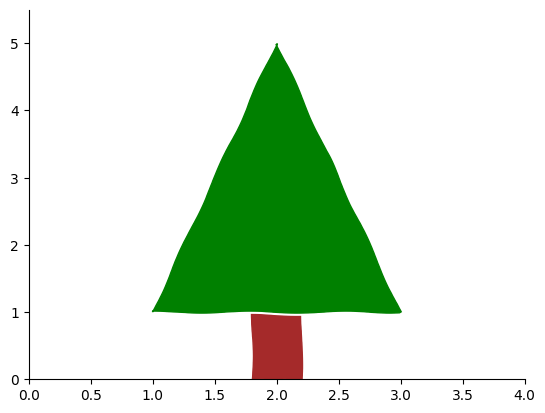
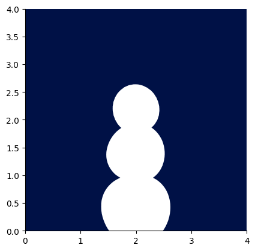

There are two options below of template plots to build upon: a tree and a snowman.
As a group, decorate an image (or multiple images) and when completed you can save this figure to file (uncomment the appropriate cell to do so). This can then be downloaded from Noteable and uploaded to the Padlet with your group name:
The code below creates the outline of a tree which you can add your decoration to:
### Code to create the template #### Modify this code if you wish but this creates your background templateimport numpy as np import matplotlib.pyplot as pltplt.rcdefaults() # Set axes labels to be default stylefig, ax = plt.subplots()plt.xkcd() # Set xkcd (sketch style) for everything else## Define parameters for the treetree_x = [1.0, 2.0, 3.0]tree_y = [1.0, 5.0, 1.0]tree_colour ="green"tree =list(zip(tree_x,tree_y)) # create [x,y] pairs for Polygon function## Define parameters for the tree trunktrunk_x = [1.8, 1.8, 2.2, 2.2]trunk_y = [0.0, 1.0, 1.0, 0.0]trunk_colour ="brown"trunk =list(zip(trunk_x,trunk_y)) # create [x,y] pairs for Polygon function## Plot the both aspects of the tree (using Polygon patches)# Set zorder to make sure any other features are on top of thist1 = plt.Polygon(tree, color=tree_colour,zorder=-1)ax.add_patch(t1)t2 = plt.Polygon(trunk, color=trunk_colour,zorder=-2)ax.add_patch(t2)## Limit the plotting areaax.set_xlim([0,4])ax.set_ylim([0,5.5])#### ADD ADDITIONAL FEATURES BELOW ####

## To save the figure to file - uncomment the code below#fig.savefig("my_decorated_tree.png")
Decorate a snowman
As an alternative, the code below creates the outline of a snowman which you can add features to:
### Code to create the template #### Modify this code if you wish but this creates your background templateimport numpy as np import matplotlib.pyplot as pltplt.rcdefaults() # Set axes labels to be default stylefig, ax = plt.subplots()plt.xkcd() # Set xkcd (sketch style) for everything elseax.set_aspect("equal") # Make x aspect = y aspect so circles are not squashedax.set_facecolor("xkcd:navy blue") # Set colour of plotting area## Define details for the snowmansnowman_centre = [(2.0, 0.4), (2.0, 1.4), (2.0, 2.2)]snowman_colour ="white"snowman_radius = [0.6, 0.5, 0.4]## Plot the snowman (using Circle patches)# Set zorder to make sure any other features are on top of thist1 = plt.Circle(snowman_centre[0], snowman_radius[0], color=snowman_colour,zorder=-3)t2 = plt.Circle(snowman_centre[1], snowman_radius[1], color=snowman_colour,zorder=-2)t3 = plt.Circle(snowman_centre[2], snowman_radius[2], color=snowman_colour,zorder=-1)ax.add_patch(t1)ax.add_patch(t2)ax.add_patch(t3)## Limit the plotting areaax.set_xlim([0,4])ax.set_ylim([0,4])#### ADD ADDITIONAL FEATURES BELOW ####

## To save the figure to file - uncomment the code below#fig.savefig("my_decorated_snowman.png")
Some options in matplotlib
Here are some examples of some matplotlib options and functionality that you could use:
# Lines to set up the plotplt.rcdefaults()fig2, ax2 = plt.subplots()plt.xkcd()## You can add points using the `scatter(x, y)` function setting:## the colour (`color`), point size (`s`) and shape (`marker`)ax2.scatter([2.0],[2.9],color="magenta",marker="o",s=30)ax2.scatter([2.5, 1.5],[2.5, 2.5],color="red",marker="*",s=400)## Or you can add lines using the `plot(x, y)` function setting:## the colour (`color`), line width (`linewidth`) and line style (`linestyle`)ax2.plot([1.2,2.8],[3.2,2.8],color="yellow",linewidth="2",linestyle="-")ax2.plot([1.2,2.8],[1.9,2.1],color="blue",linewidth="10",linestyle=":")## Or add a patch such as a rectangle (using `plt.Rectangle` definition)## or `plt.Polygon()` or `plt.Circle()` as defined in previous cells.# plt.Rectangle((x, y), width, height, angle, color=color)rectangle = plt.Rectangle((1.9,2.2), width=0.2, height=0.2, color="#660033")ax2.add_patch(rectangle)
Marker and line style options: - https://matplotlib.org/stable/api/markers_api.html - https://matplotlib.org/stable/gallery/lines_bars_and_markers/linestyles.html
Or look in the matplotlib gallery to see if anything provides inspiration: - https://matplotlib.org/stable/gallery/index.html
Extra Challenge: can you use random number generation to add detail to your picture?
Source Code
---title: Add some decorationjupyter: python3---There are two options below of template plots to build upon: a tree and a snowman.As a group, decorate an image (or multiple images) and when completed you can save this figure to file (uncomment the appropriate cell to do so). This can then be downloaded from Noteable and uploaded to the Padlet with your group name:https://uob.padlet.org/fturci/adding-decorations-zk4khqfwj17l2377## Decorate a treeThe code below creates the outline of a tree which you can add your decoration to:```{python}### Code to create the template #### Modify this code if you wish but this creates your background templateimport numpy as np import matplotlib.pyplot as pltplt.rcdefaults() # Set axes labels to be default stylefig, ax = plt.subplots()plt.xkcd() # Set xkcd (sketch style) for everything else## Define parameters for the treetree_x = [1.0, 2.0, 3.0]tree_y = [1.0, 5.0, 1.0]tree_colour ="green"tree =list(zip(tree_x,tree_y)) # create [x,y] pairs for Polygon function## Define parameters for the tree trunktrunk_x = [1.8, 1.8, 2.2, 2.2]trunk_y = [0.0, 1.0, 1.0, 0.0]trunk_colour ="brown"trunk =list(zip(trunk_x,trunk_y)) # create [x,y] pairs for Polygon function## Plot the both aspects of the tree (using Polygon patches)# Set zorder to make sure any other features are on top of thist1 = plt.Polygon(tree, color=tree_colour,zorder=-1)ax.add_patch(t1)t2 = plt.Polygon(trunk, color=trunk_colour,zorder=-2)ax.add_patch(t2)## Limit the plotting areaax.set_xlim([0,4])ax.set_ylim([0,5.5])#### ADD ADDITIONAL FEATURES BELOW ####``````{python}## To save the figure to file - uncomment the code below#fig.savefig("my_decorated_tree.png")```---## Decorate a snowmanAs an alternative, the code below creates the outline of a snowman which you can add features to:```{python}### Code to create the template #### Modify this code if you wish but this creates your background templateimport numpy as np import matplotlib.pyplot as pltplt.rcdefaults() # Set axes labels to be default stylefig, ax = plt.subplots()plt.xkcd() # Set xkcd (sketch style) for everything elseax.set_aspect("equal") # Make x aspect = y aspect so circles are not squashedax.set_facecolor("xkcd:navy blue") # Set colour of plotting area## Define details for the snowmansnowman_centre = [(2.0, 0.4), (2.0, 1.4), (2.0, 2.2)]snowman_colour ="white"snowman_radius = [0.6, 0.5, 0.4]## Plot the snowman (using Circle patches)# Set zorder to make sure any other features are on top of thist1 = plt.Circle(snowman_centre[0], snowman_radius[0], color=snowman_colour,zorder=-3)t2 = plt.Circle(snowman_centre[1], snowman_radius[1], color=snowman_colour,zorder=-2)t3 = plt.Circle(snowman_centre[2], snowman_radius[2], color=snowman_colour,zorder=-1)ax.add_patch(t1)ax.add_patch(t2)ax.add_patch(t3)## Limit the plotting areaax.set_xlim([0,4])ax.set_ylim([0,4])#### ADD ADDITIONAL FEATURES BELOW ####``````{python}## To save the figure to file - uncomment the code below#fig.savefig("my_decorated_snowman.png")```---### Some options in matplotlibHere are some examples of some `matplotlib` options and functionality that you could use:```{python}# Lines to set up the plotplt.rcdefaults()fig2, ax2 = plt.subplots()plt.xkcd()## You can add points using the `scatter(x, y)` function setting:## the colour (`color`), point size (`s`) and shape (`marker`)ax2.scatter([2.0],[2.9],color="magenta",marker="o",s=30)ax2.scatter([2.5, 1.5],[2.5, 2.5],color="red",marker="*",s=400)## Or you can add lines using the `plot(x, y)` function setting:## the colour (`color`), line width (`linewidth`) and line style (`linestyle`)ax2.plot([1.2,2.8],[3.2,2.8],color="yellow",linewidth="2",linestyle="-")ax2.plot([1.2,2.8],[1.9,2.1],color="blue",linewidth="10",linestyle=":")## Or add a patch such as a rectangle (using `plt.Rectangle` definition)## or `plt.Polygon()` or `plt.Circle()` as defined in previous cells.# plt.Rectangle((x, y), width, height, angle, color=color)rectangle = plt.Rectangle((1.9,2.2), width=0.2, height=0.2, color="#660033")ax2.add_patch(rectangle)```### More optionsColour options:- https://matplotlib.org/3.1.0/gallery/color/named_colors.htmlMarker and line style options: - https://matplotlib.org/stable/api/markers_api.html - https://matplotlib.org/stable/gallery/lines_bars_and_markers/linestyles.htmlPatches (Rectangle, Circle, Polygon) - https://matplotlib.org/stable/api/_as_gen/matplotlib.patches.Rectangle.html - https://matplotlib.org/stable/api/_as_gen/matplotlib.patches.Polygon.html - https://matplotlib.org/stable/api/_as_gen/matplotlib.patches.Circle.htmlOr look in the matplotlib gallery to see if anything provides inspiration: - https://matplotlib.org/stable/gallery/index.html---**Extra Challenge**: can you use *random number generation* to add detail to your picture?